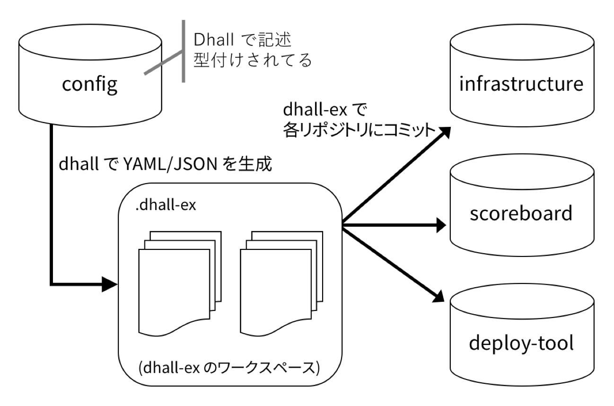

Dhall を試して物足りない部分を補うツールを自作した
本稿は Haskell Advent Calendar 2018 5日目の記事です．
Haskell Day 2018 の発表をきっかけに，兼ねてから気になっていた Dhall を試した． いくつかツールが欲しくなったので作りましたっていう話です．
作ったものはこれ:
ちなみに，今回作ったツールは現状の stack の stable resolver にある v1.5.1 を利用している．
Dhall
Dhall は静的型付けされた設定記述言語である． 多くの場合，プログラミング言語やアプリケーションに使われる設定ファイルには JSON や YAML が利用されている． プログラミング言語のビルドシステムのような設定ファイル一つ程度なら問題ないが，Kubernetes や Ansible のような膨大な設定ファイルが依存しあう場合，静的型付けプログラミング言語のようにコンパイルによる型検査を導入したくなるだろう． Dhall はそのための言語であり，また便利な関数が用意されているため，非常に再利用性の高い設定ファイルを記述できる．
例:
Dhall は静的片付け言語なので，まずは型を定義しよう:
このユーザ型の値はユーザ名から一意に生成されることは容易に想像できるだろう:
$ cat ./makeUser.dhall
\(user_name : Text)
-> let homeDirectory = "/home/${user_name}"
in let privateKeyFile = "${homeDirectory}/id_rsa"
in let publicKeyFile = "${privateKeyFile}.pub"
in { homeDirectory =
homeDirectory
, privateKeyFile =
privateKeyFile
, publicKeyFile =
publicKeyFile
}
: ./User.dhallこの ./makeUser.dhall は任意の文字列を与えると，それをユーザ名として ./User.dhall 型の値を生成してくれる． さらに，高階関数を使って複数のユーザに対し一気に適用してみよう．
$ cat ./users.dhall
let User = ./User.dhall
in let map =
https://raw.githubusercontent.com/dhall-lang/dhall-lang/0a7f596d03b3ea760a96a8e03935f4baa64274e1/Prelude/List/map
in map Text User ./makeUser.dhall [ "alice", "bob", "curry" ] : List Usermap には dhall のリポジトリにある標準パッケージの関数を直接インポートしている． map の型は ∀(a : Type) → ∀(b : Type) → (a → b) → List a → List b となっている． 基本的に Dhall で多相な高階関数を利用するときは，引数から直接型を与えてあげる必要がある．
さて，これを dhall でビルドすると次のような結果を得る:
$ dhall <<< ./users.dhall
[ { homeDirectory =
"/home/alice"
, privateKeyFile =
"/home/alice/id_rsa"
, publicKeyFile =
"/home/alice/id_rsa.pub"
}
, { homeDirectory =
"/home/bob"
, privateKeyFile =
"/home/bob/id_rsa"
, publicKeyFile =
"/home/bob/id_rsa.pub"
}
, { homeDirectory =
"/home/curry"
, privateKeyFile =
"/home/curry/id_rsa"
, publicKeyFile =
"/home/curry/id_rsa.pub"
}
]これは次のようなYAMLに対応し，dhall-to-yaml などのツールで変換可能だ:
- privateKeyFile: /home/alice/id_rsa
publicKeyFile: /home/alice/id_rsa.pub
homeDirectory: /home/alice
- privateKeyFile: /home/bob/id_rsa
publicKeyFile: /home/bob/id_rsa.pub
homeDirectory: /home/bob
- privateKeyFile: /home/curry/id_rsa
publicKeyFile: /home/curry/id_rsa.pub
homeDirectory: /home/curryまた，ざっくりとしたイメージを得るには、先日あった Haskell Day 2018 での発表資料がわかりやすくてオススメ．
使ってみて思うところ
もしかしたら最新のバージョンであれば改善しているものもあるかもしれない．
- 基本的な高階関数があり便利
- map,fold,filter など
- 普通のプログラミングのように式を再利用できる
- 型推論がザコい
- パラメトリック多相を挟むとダメみたいですね
- 結構ビルドエラーがエスパー
- 慣れの問題か？
- YAML のいわゆる連想配列への変換ができない
- 日本語が化ける ;;
- まぁ原因はわかるので最新でも治ってなかったらPRしてみるか
何に導入したか
弊社が企画してる学生向けの競技型イベントに関するシステムの設定ファイルを Dhall に置き換えてみた． そのシステムは，インフラ・スコアボード・デプロイツールの3つのリポジトリに別れており，ところどころ重複した設定が3つのリポジトリに存在する． そこで，設定用のリポジトリを作って，そこに Dhall で記述した設定を置き，そこから各リポジトリに設定を撒くような仕組みを考えることにした．

別に Dhall にしたからといって劇的に何かがよくなるわけでは無いのだが，ちょうど良いサンドボックスがあったのでイロイロと試してみる，というのが本音です（笑）
yaml-to-dhall
最初の方はせっせと手作業で変換していたが，何個かやって変換の仕方の勘所がわかって来た． そうなると後は作業でしか無いので，なんとかして大量にある設定ファイルを一括変換したい．
調べた限り，YAML から Dhall に変換するプログラムは無さそう(逆はもちろんあるけど)． なのですっごい雑なものを作った．
これは極めて単純なことしかできない． 数値は全て Float に変換されるし，Optional や空リストの書き方が間違っている． とりあえず変換して，手元のエディタで置換すればいいかなと思ったので雑なままである．
時間ができたらそのうち直すかも．
dhall-ex
前述した通り，一組の設定ファイル群から複数のリポジトリの設定ファイルを生成したかったのでその仕組みを作った． dhall-ex は次のような設定ファイルを記述する:
{ GH_TOKEN =
[ "matsubara0507:XXXX" ] : Optional Text
, root =
"configs"
, exports =
[ { name =
"deploy-tool"
, repo =
[ "git-challenge/deploy-tool" ] : Optional Text
, paths =
[ "settings/orgs/orgs.yml"
, "settings/orgs/review.yml"
...
]
}
...
]
}別にどっちでもよかったのだが，せっかくなので dhall-ex の設定ファイルも Dhall で記述するようにした． なので，具体例より型を見た方が早いだろう．
let Export = { name : Text, repo : Optional Text, paths : List Text }
in { GH_TOKEN : Optional Text, root : Text, exports : List Export }root は設定ファイル群を置くパスで，exports が設定ファイル群の更新先のリポジトリなどの情報だ． repo で GitHub リポジトリを指定し，paths で関連する設定ファイルを列挙する． 例の場合 ./config/settings/orgs/orgs.yml.dhall を ./.dhall-ex/git-challenge/deploy-tool/settings/orgs/orgs.yml に dhall でビルドする．
ちなみに Dhall のバージョンが古いので Optional がリストのリテラルを利用しているが，最新の Dhall には Some と None があるはず．
機能
現状はこんな感じ:
$ dhall-ex --help
dhall-ex - cli tool to support dhall
Usage: dhall-ex [-v|--verbose] [-c|--config PATH] [--only NAME] COMMAND
[--version]
Available options:
-v,--verbose Enable verbose mode: verbosity level "debug"
-c,--config PATH Configuration file
--only NAME Exec subcommand only NAME in config
--version Show version
-h,--help Show this help text
Available commands:
sort Sort record keys in dhall file
echo Echo TEXT
init Init dhall-ex work directory
build Build Dhall file to YAML or JSON
deploy Deploy builded config file to remote repository
checkout Checkout repository in dhall workspace
pull Pull repository in dhall workspaceecho は設定が正しく読み取れるかどうかにだけ使う雑機能． sort レコードのフィールドの順番を型に合わせて並び替えてくれるコマンドだ． 前述した yaml-to-dhall などを使った後に使った(並び変える必要はないんだけど，なんか読みやすいように)．
init でリポジトリなどの初期化をし，build で設定ファイルを変換し，deploy でコミットとプッシュを行ってくれる． checkout や pull はただの git コマンドのラッパーだ．
また，--only deploy-tool などとすることでコマンドの実行を特定のリポジトリに限定できる．
実装
実は内部実装はそこまで難しいことをしていない． Dhall のファイルを読み込み，ビルドし，それを dhall-ex の設定ファイルに則って出力するだけだ． build 以外のコマンドは shelly を使ってシェルスクリプトもどきを実行している．
ToDo
- 例外処理が雑なのを直す
- だいたいこの部分が残る（笑）
- 任意のコマンドを各リポジトリのワークスペースで実行できるようにする
- なんか
git statusとかgit branchとかしたい
- なんか
- 並行処理
おしまい
随分雑な記事になってしまった．